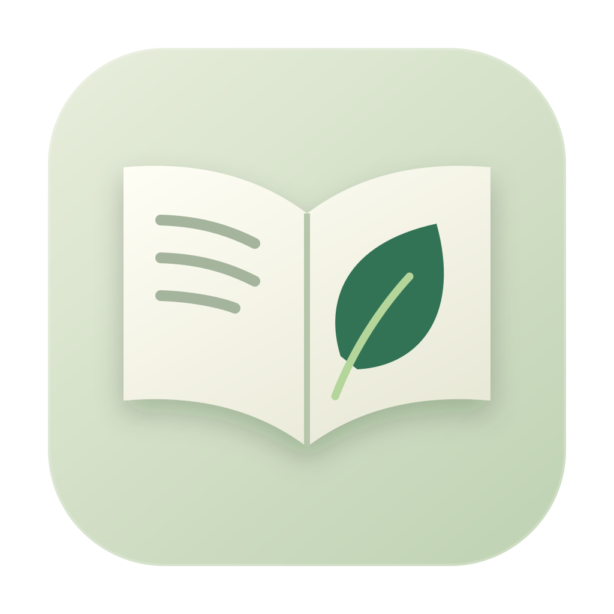
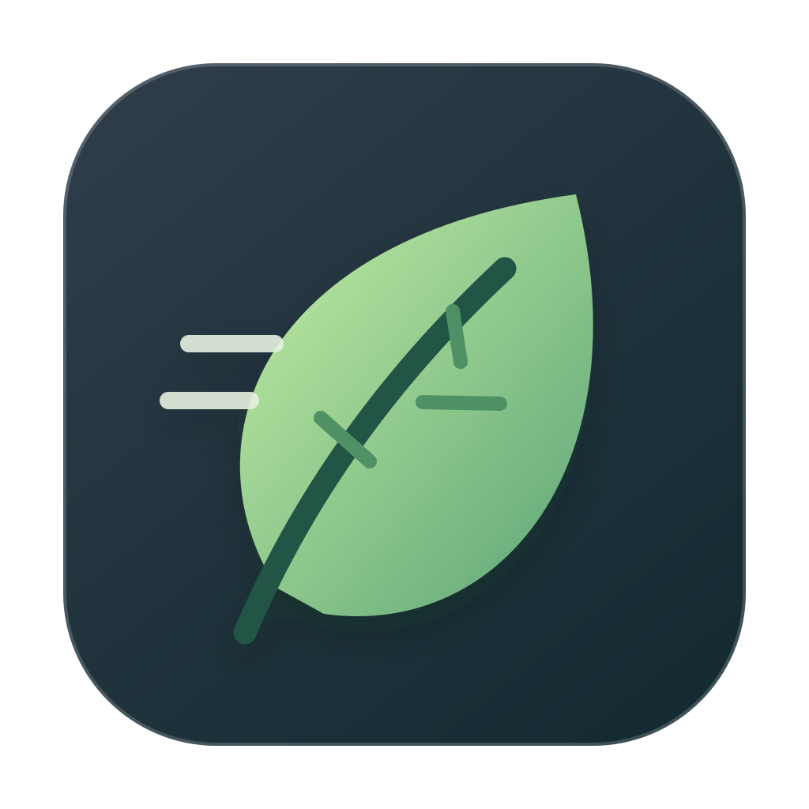

A / Leaf Page
A paper-first mark with a leaf. The clearest connection to reading Markdown.
64 / 32 / 16 px · light and dark surroundings

B / Open Leaf
An open book with a leaf. A softer, more traditional reading identity.
64 / 32 / 16 px · light and dark surroundings

C / Quick Leaf
A single leaf with a motion cue. More abstract, with a distinct silhouette.
64 / 32 / 16 px · light and dark surroundings